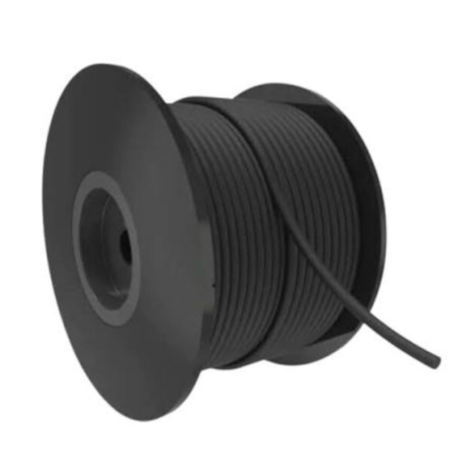

Cordões para Vedação
Desenvolvidos para confecção rápida de anéis O-Ring sob medida, emenda a frio ou vulcanização, garantindo estanqueidade perfeita e excelente resistência física e química em flanges, tampas, canais e estruturas industriais de grandes dimensões.
Variações Disponíveis

Cordão de Vedação (O-Ring)
Disponível em perfis redondos e seções variadas nos elastômeros NBR, Viton (FKM), Silicone, EPDM e Neoprene. Alta capacidade de compressão e excelente recuperação elástica.
Solicitar CotaçãoCordão de Vedação (O-Ring)
Disponível em perfis redondos e seções variadas nos elastômeros NBR, Viton (FKM), Silicone, EPDM e Neoprene. Alta capacidade de compressão e excelente recuperação elástica.
Solicitar CotaçãoCordão de Vedação (O-Ring)
Disponível em perfis redondos e seções variadas nos elastômeros NBR, Viton (FKM), Silicone, EPDM e Neoprene. Alta capacidade de compressão e excelente recuperação elástica.
Solicitar CotaçãoFicha Técnica Geral - Cordões Industriais
| Especificação | Detalhes |
|---|---|
| Compostos / Elastômeros: | Borracha Nitrílica (NBR), Viton (FKM), Silicone (Grau Industrial e Alimentício), EPDM, Neoprene (CR) e Poliuretano (PU). |
| Faixa de Dureza: | De 60 a 80 Shore A (conforme o elastômero selecionado). |
| Diâmetros Padronizados: | De 1,00 mm até 30,00 mm (fornecidos em rolos ou metros lineares). |
| Temperatura de Trabalho: | Silicone / Viton: -50°C a +200°C (picos até 250°C) / NBR / EPDM: -40°C a +120°C. |
| Resistência Química e Física: | Excelente resistência a óleos, combustíveis, vapores, intempéries, ozônio e fluidos hidráulicos. |
| Métodos de Fixação / Emenda: | Colagem instantânea (adesivos cianoacrilato), vulcanização a quente ou encaixe direto em canaletes. |
| Aplicações Típicas: | Flanges de grande diâmetro, caldeiras, autoclaves, portas de estufas, bombas industriais e painéis elétricos. |
| Normas Atendidas: | DIN 7715 E2/E1, ISO 3601, ASTM D2000 e aprovação FDA (para modelos em Silicone). |